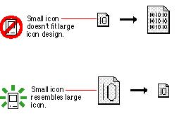

|
|
Maintain a Consistent Visual Appearance in an Icon FamilyMaintain a close visual relationship between all members of an icon family. Color versions of icons should resemble the black-and-white versions. Users should be able to easily recognize standard interface elements and icons across all monitor types. Users can have several monitors connected to a computer and several computers on which they use your applications. Your application icon should look consistent when a user changes the bit depth of a monitor or moves your icon from a color monitor to a black-and-white monitor.Design the large (32-by-32 pixel) icon first, and then adapt the design to the small icon. You can leave out inessential details in the small version of your icon, but it shouldn't look significantly different from the large version. Figure 8-15 shows how starting with the design of the large icon and adapting it for the small icon works better than starting with the design of the small icon. Figure 8-15 Design the large icon first and base the small icon design on it  |